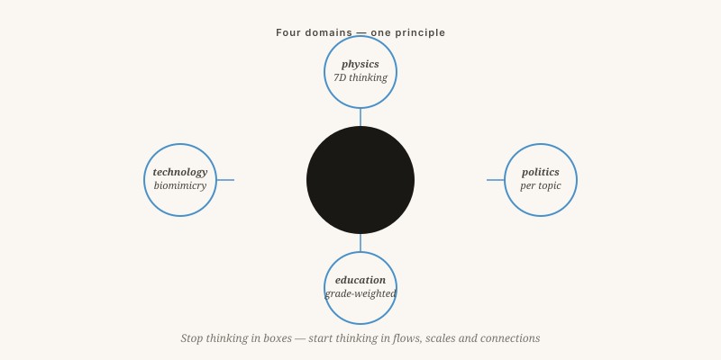

How everything connects
One thread through seven subjects: stop thinking in compartments, start thinking in flows, scales and connections.
By Jacobus van Merksteijn · 7 min read · 23 May 2026

Concordia disciplinarum — unity of the disciplines
The same mistake in four guises
Read this edition from the top and you see one thread. It does not matter whether the subject is party politics, education, nuclear fusion or ship coatings — the mistake is always the same, and so is the solution.
The mistake: thinking in compartments, scales and projecting years ahead.
The solution: thinking in flows, dimensions and projecting generations ahead.

Four disciplines, one structure
Stop compartments, start flows
Dare more dimensions
Scale, value and multiplicity as real axes — not as afterthoughts. Dark matter as a scale problem, not a new kind of substance.
Decide by subject
Measurable value for money, independent oversight, 24 policy areas each with its own cycle. No more package votes.
Reward outcome
Fund on average final grade, not pass rate. Risk back into childhood. Freedom for schools to be different.
Learn from nature
Biomimicry as a serious engineering discipline. Vortex reactor, shark-skin foil, selective heat rejection. Not against it — with it.
Different surface
Prevent fouling through transparency and simplicity, not through taxation after the fact. Parasitism slides off a smooth system.
Revolutionary thinking
Revolution here not as overthrow, but as reversal: looking from a direction where no-one has yet stood. Galileo looked from the sun. Darwin from variation. Einstein from light. All of them people who did not think harder than their contemporaries — they looked from a different angle.
"A newspaper without debate is a sermon. Here that is not possible."
In coming editions I will develop each subject further. But the choice of which subject returns first rests with you. Respond, disagree, contribute. Until next month.
How everything connects
One thread through seven topics: stop thinking in silos, start thinking in flows, scales, and connections.
Read this edition from the top and you will find a single pattern. The error is the same in every discipline: thinking in compartments, fixed scales, and short-term calculations. The solution is equally consistent: thinking in flows, dimensions, and generational timescales.
In physics we try to explain the universe with four dimensions and run into trouble at dark matter — adding G, W, and N resolves it. In politics we bundle a hundred topics into one vote and run into trouble because no party fits the actual combination of convictions — deciding issue by issue resolves it. In education we pay schools per diploma and run into trouble because the diploma becomes less valuable — paying for outcomes resolves it. In technology we try to confine plasma with magnets and protect ships with poison — learning from nature resolves it.
Galileo looked from the sun. Darwin from variation. Einstein from light. None of them thought harder than their contemporaries — they looked from a different angle. That is the invitation here: revolution not as overthrow but as reversal of viewpoint.
What I ask of you
Respond, disagree, contribute. The choice of which topic returns first in the next edition lies with you. "A paper without discussion is a sermon. That cannot happen here."